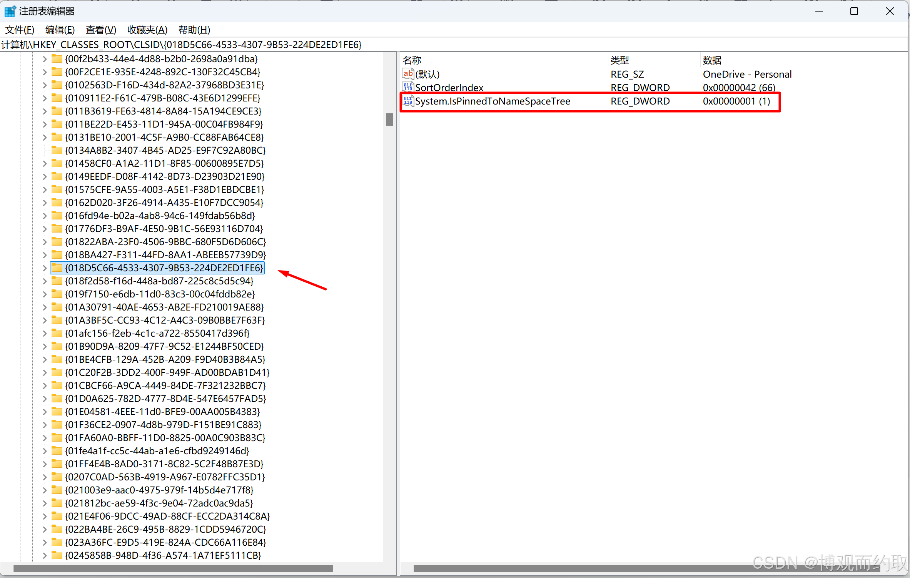

- 转载自 https://blog.csdn.net/qq_40483419/article/details/145280493
1. 场景还原
新安装的windows系统安装onedrive后，在资源管理器侧边栏存在两个快速访问入口，强迫症的我想删掉一个只保留一个，直接右键是无法删除的。
2. 导致因素
Windows 10 和 Windows 11 通常预装了 OneDrive，并自动为当前用户配置了一个入口。如果用户重新下载安装了一个独立版本的 OneDrive，可能会导致资源管理器同时显示两个入口。
3. 解决方案
1. 手动方案
打开注册表，找到OneDrive - Personal 条目的文件夹
定位到
HKEY_CURRENT_USER\SOFTWARE\Microsoft\Windows\CurrentVersion\Explorer\Desktop\NameSpace,找到OneDrive - Personal 条目的文件夹并复制文件夹ID
在CLSID 文件夹修改System.IsPinnedtoNameSpaceTree
注册表中再次定位到HKEY_CLASSES_ROOT\CLSID\，找到刚刚搜索到的文件夹名，把System.IsPinnedtoNameSpaceTree的值改为0，再次打开资源管理器可以看到效果。
- 
2. 脚本方案
手动方案太麻烦，下面提供一个脚本，打开powershell运行即可。
| PowerShell |
|---|
1
2
3
4
5
6
7
8
9
10
11
12
13
14
15
16
17
18
19
20
21
22
23
24
25
26
27
28
29
30
31
32
33
34
35
36
37
38
39
40
41 | # 定义路径
$namespacePath = "HKCU:\Software\Microsoft\Windows\CurrentVersion\Explorer\Desktop\NameSpace"
$clsidRootPath = "HKEY_CLASSES_ROOT\CLSID"
$searchValue = "OneDrive - Personal"
# 查找 "OneDrive - Personal" 对应的 DirectoryName
$directoryName = Get-ChildItem -Path $namespacePath | ForEach-Object {
$keyPath = $_.PSPath
try {
# 获取默认值
$defaultValue = (Get-ItemProperty -Path $keyPath -ErrorAction Stop)."(default)"
if ($defaultValue -eq $searchValue) {
$_.PSChildName # 返回子键名（GUID 格式）
}
} catch {
Write-Warning "无法访问注册表键：$keyPath"
}
} | Select-Object -First 1 # 只取第一个匹配的结果
# 检查是否找到 DirectoryName
if ([string]::IsNullOrWhiteSpace($directoryName)) {
Write-Warning "未找到 'OneDrive - Personal' 对应的 DirectoryName，请检查注册表内容是否正确。"
} else {
# 构造完整的 CLSID 注册表路径
$targetPath = "$clsidRootPath\$directoryName"
# 使用 .NET 访问注册表键
try {
$registryKey = [Microsoft.Win32.Registry]::ClassesRoot.OpenSubKey("CLSID\$directoryName", $true)
if ($registryKey) {
# 修改 System.IsPinnedToNameSpaceTree 的值为 0
$registryKey.SetValue("System.IsPinnedToNameSpaceTree", 0, [Microsoft.Win32.RegistryValueKind]::DWord)
$registryKey.Close()
Write-Host "已成功将 $targetPath 的 'System.IsPinnedToNameSpaceTree' 修改为 0。" -ForegroundColor Green
} else {
Write-Warning "路径 $targetPath 不存在，无法修改。"
}
} catch {
Write-Warning "无法访问或修改注册表键：$targetPath。错误信息：$_"
}
}
|